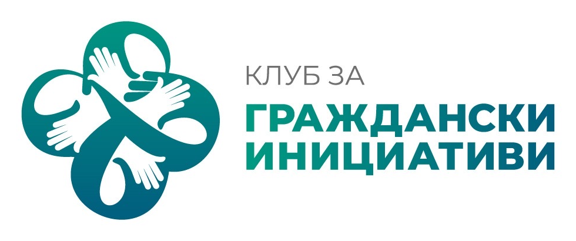

„Един грам живот“
Програма за деца и родители, създадена да изгради знания, умения, устойчивост и ясни ценности преди детето да се сблъска с рисков избор.
Точно преди светът да стане по-голям
Подходяща възраст
Програмата е насочена към деца в 5. и 6. клас и началото на 7. клас — период, в който детето постепенно излиза от сигурната семейна среда, започва да се сравнява с връстниците си и оформя своята идентичност.
Какво искаме да изградим
- ясни приоритети и ценности;
- разпознаване на рискови ситуации;
- разбиране защо правилата са важни;
- поемане на отговорност за действията;
- умение да пази себе си и другите.
Всеки модул създава практическа основа за приложение в ежедневието. Деца и родители работят и заедно, и поотделно, а процесът се води от предварително обучени треньори. Всеки участник получава работна тетрадка.
Седем модула, които изграждат характер
Натисни върху всеки модул, за да видиш какво развива.
Хоби клубът превръща уменията в навик
Програмата подчертава, че характерът се изгражда чрез повторение и реален опит. Затова след обучителните модули идва средата, в която децата могат да прилагат наученото заедно с родители и други семейства.
Създаване на усещане за принадлежност и сигурност.
Срещи с други семейства, активни възрастни и позитивни примери.
Редовни инициативи, които превръщат доброто поведение в устойчива практика.

Как можем да го направим сами?
Събираме семейства
Изграждането на личността не зависи единствено от самата програма. Семействата могат да се обединят, да създават общи инициативи, да имат ясна цел и да реализират последователно идеи във времето.
Три условия за устойчив резултат
- Свързаност между детето, родителя и групата.
- Обществен интерес — не носи лични облаги за отделни участници.
- Последователност — реализира се периодично и с навик.
„Лагер на доброто“
За всички, които се включват по-дълбоко в самоорганизирани инициативи и Хоби клубове, програмата предвижда „Лагер на доброто“. Два пъти годишно представители на групите могат да се събират заедно със семействата си, да обменят идеи, опит и съвместни инициативи.
Присъствието на лагерите е безплатно.
Когато действаме заедно
Създаваме среда. Устойчивата среда изгражда личности. А именно това превръща превенцията от еднократна среща в посока за развитие.
Програмата свързва дете, родител и общност.
Идеята е проста: знанието да не остане само информация, а да се превърне в умение, навик и лична позиция.
